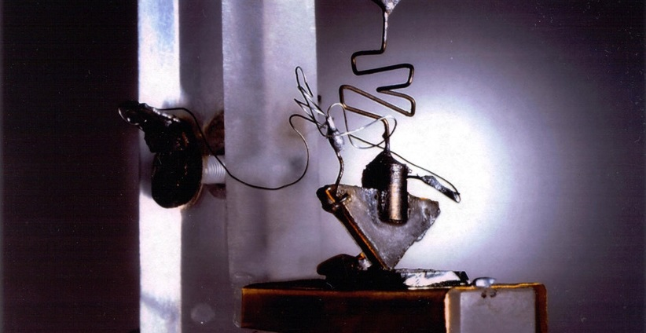
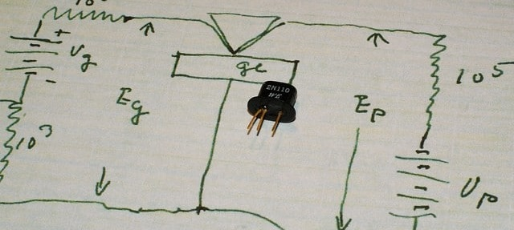

Inicio...
Os computadores de 1ª geração eram máquinas muito custosas, pois além do alto consumo de energia, as válvulas queimavam facilmente.
A solução para resolver os problemas da válvulas eram buscadas através de pesquisas em novos materiais. Dessa maneira conseguiram
inventar uma nova classe de materiais, os semicondutores, que podiam funcionar como condutores ou isolantes.
De posse dessa nova classe de materiais, uma equipe dos Laboratórios Bell nos Estados Unidos, inventaram o transistor (1947/1948),
que podia realizar a mesma função de uma válvula só que, além de um tamanho muito menor, consumia muito menos energia do que as válvulas.
A invenção do transistor semicondutor não só rendeu o Prêmio Nobel de Física em 1956 para os seus inventores (William Shockley, John Bardeen
e Walter Brattain), como também iniciou o desenvolvimento dos computadores de 2ª Geração.
Os computadores de 2ª Geração são principalmente caracterizados pela total substituição das válvulas pelos transistores, logo, além de serem menores, são computadores com maior poder de processamento, gastando muito menos energia para realizarem cálculos.
Outros pontos importantes...

1959 – Introdução dos transistores
Marca o início da segunda geração de computadores.
Durante essa fase, os computadores se tornaram mais acessíveis para grandes empresas e organizações, e o aumento da capacidade de
processamento e a diminuição dos custos de fabricação tornaram os sistemas mais populares. O primeiro computador totalmente
transistorizado foi o TRADIC, contendo 800 transistores.
Um transistor é um dispositivo eletrônico que controla o fluxo de corrente elétrica. Ele possui três terminais: base, coletor e emissor. Ao aplicar uma pequena corrente na base, o transistor permite que uma corrente maior passe entre o coletor e o emissor, funcionando como um amplificador ou chave para controlar circuitos. Ele substitui as válvulas a vácuo, oferecendo maior eficiência e confiabilidade.

1960 – Memórias de ferrite
As memórias de ferrite se destacaram como um dos principais avanços tecnológicos em relação ao armazenamento de dados.
1961 – Surgimento das linguagens de programação de alto nível
Linguagens de programação como o COBOL e o FORTRAN começaram a ser mais amplamente adotadas, permitindo maior flexibilidade e facilidade na
criação de programas.
1964 – Lançamento do IBM System/360
A IBM apresenta a linha System/360, que se destaca pela sua compatibilidade entre diferentes modelos de computadores.
Ofereceu uma arquitetura compatível entre diferentes modelos de computador, promovendo uma maior integração nos negócios e nas indústrias.